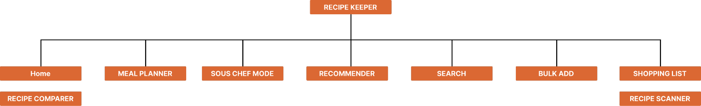

As highlighted in our initial proposal, the app’s tagline is to “Cook more. Eat Healthier. Shop Smarter.” Our design approach focuses on considering key parts of the user experience and implementing / improving features that help it better achieve that promise.
VIDEO PRESENTATION PLACEHOLDER
Executive Summary
PLACEHOLDER (waiting on Aly for new executive summary)
Our redesigned Recipe Keeper app has been created to store and process the same information as the original app, but in a manner that ensures an ideal user experience through more suitable cognitive effects. To achieve this, our design process focused heavily on how to represent the information and build interactions that aligned with the users' needs. Our design approach was based on the representation design framework that considered user tasks, underlying information, cognitive abilities, and context of use.
To address user tasks such as comparison, adding to planner, and viewing recipes, our redesign focuses on intuitive interactions that are easy to use and help users to achieve their goals efficiently. For example, our recipe comparison feature uses a side-by-side layout that enables users to compare two recipes quickly. Additionally, our meal planner feature allows users to add recipes into their calendar, making it easier to plan and organize meals.
When considering the underlying information such as quantitative, qualitative, and text data, our redesign was focused on presenting the data in an easy-to-understand manner. For example, within the comparison feature, when a user is comparing the nutritional information of two different recipes, as the information is quantitative, the representation is able to highlight the “better” recipe based on the statistic.
Our redesign also takes into account the cognitive abilities and limitations of users while using the app. For instance, while cooking, users may not be able to read instructions or interact with the app using their hands. To address this, we have included “Sous Chef”, a voice and audio feature that allows users to access recipes using voice commands.
Finally, our redesign considers the context of use, which includes being organized with recipes, wanting to cook more, and being informed. Accordingly, we have included a search feature that makes it easy for users to find recipes based on their dietary requirements or preferences. This was also the inspiration for a meal recommender feature, where showing the user the picture of a delicious recipe that they could make would encourage them to not only cook but also use other aspects of the app.
Navigational Map
Description of Screens:
The following screens have been outlined in the order in which the prototype works (click each image to enlarge).